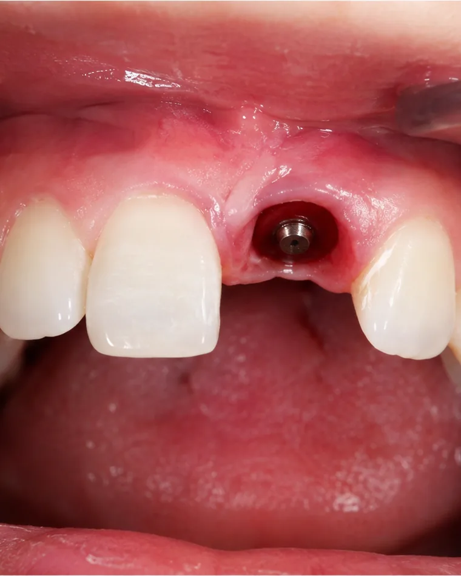
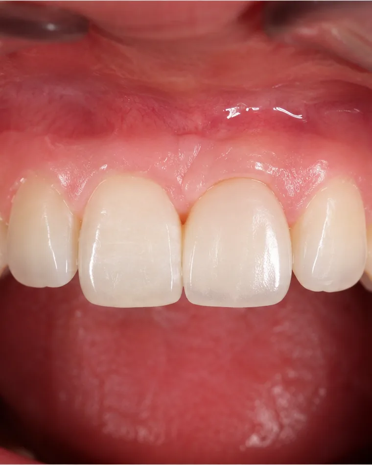
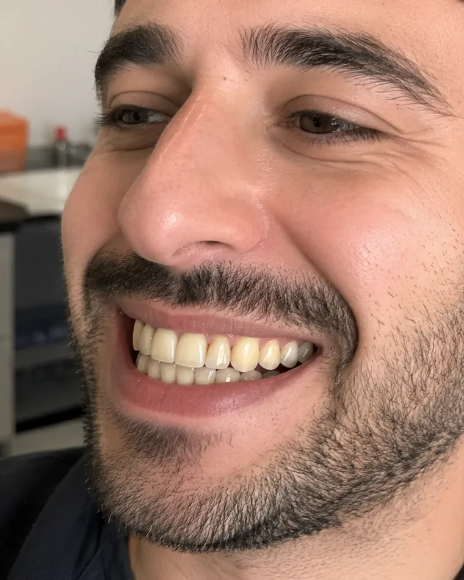
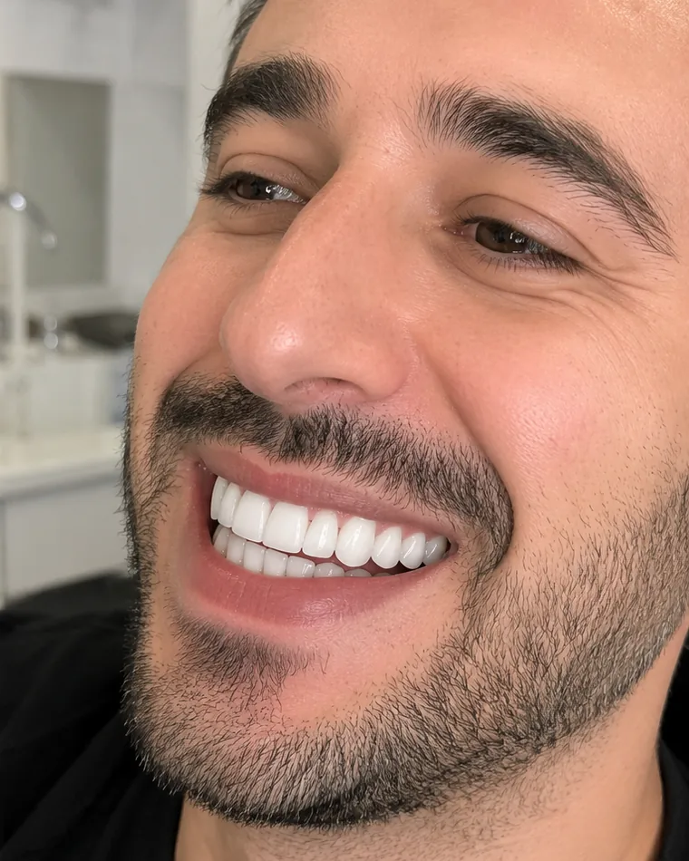
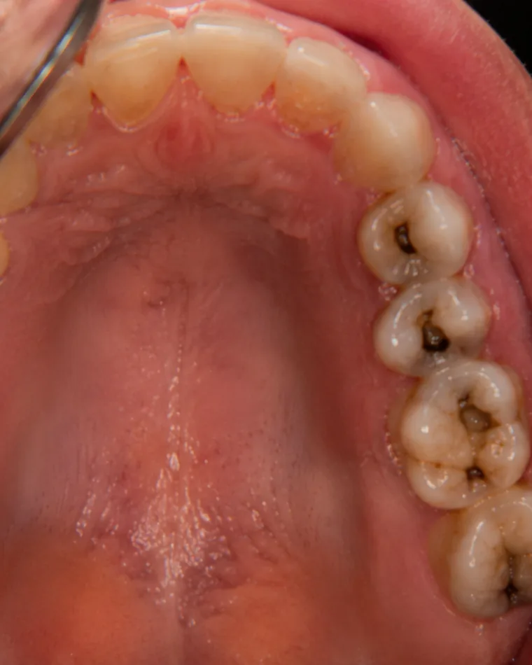
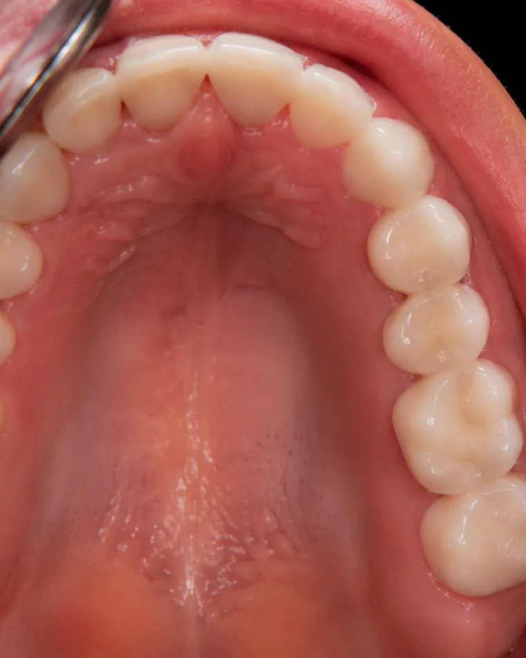

טיפולי חירום
המרפאה מספקת טיפולי חירום בשעות הפעילות, כולל בדיקה כללית מקיפה וצילומים. הצוות הרפואי מאובזר באמצעים מתקדמים לאבחון מהיר ולמתן טיפול חירום יעיל. מומלץ להגיע עם כל הצילומים הקיימים.
מטיפולי חירום ומניעה, דרך שיקומים מורכבים וכירורגיה, ועד אסתטיקת שיניים ופנים - כל הטיפולים מתבצעים במרפאה אחת, על ידי רופא שמכיר את התיק שלכם לאורך כל הדרך.
המרפאה מספקת טיפולי חירום בשעות הפעילות, כולל בדיקה כללית מקיפה וצילומים. הצוות הרפואי מאובזר באמצעים מתקדמים לאבחון מהיר ולמתן טיפול חירום יעיל. מומלץ להגיע עם כל הצילומים הקיימים.
בדיקה תקופתית מקיפה של השיניים, החניכיים ורקמות הפה, בשילוב צילומים לפי הצורך. המטרה היא לזהות עששת, שברים ומחלות חניכיים בשלב מוקדם - כשהטיפול קצר, פשוט ופחות יקר.
לאחר האבחון נבנית תוכנית טיפול הכוללת את סדר הפעולות, לוחות הזמנים והעלויות הצפויות, עם הצגת החלופות האפשריות - כדי שתוכלו לקבל החלטה מושכלת בראש שקט.
ביצוע עקירות שיניים נשירות וקבועות, כולל עקירות שיני בינה. הטיפול מתבצע כאשר השן אינה ניתנת לשיקום, תוך מתן הנחיות מפורטות לטיפול לאחר העקירה לצורך החלמה מיטבית.
שחזור שיניים לאחר הסרת עששת באמצעות חומרי קומפוזיט איכותיים. השחזורים מעניקים לשן מראה טבעי, עמידים בפני שברים ונשארים לטווח ארוך, תוך החזרת התפקוד התקין של השן.
טיפול מניעתי חשוב להגנה מפני עששת עתידית. מתאים במיוחד למי שסובל מעששת חוזרת או בעל חריצים עמוקים בשיניים. הטיפול מתבצע בחומר קומפוזיט נוזלי שמחליק את פני השטח ומונע התפתחות עששת.
טיפול המתבצע כאשר עששת חדרה למוך השן או בעקבות טראומה. הטיפול כולל הסרת הרקמה הפגועה, ניקוי והרחבת תעלות השורש ומילויין בחומר מיוחד. במקרים מסוימים כולל גם שחזור או כתר.
ניקוי מקצועי להסרת אבנית שמצטברת באזורים שקשה להגיע אליהם בצחצוח רגיל. הטיפול חיוני למניעת דלקות ומחלות חניכיים. מומלץ לבצע פעם בחצי שנה כחלק משמירה על היגיינה אוראלית.
השלב הסופי לאחר החדרת שתל, בו מותקן כתר שמדמה את השן הטבעית. הכתרים מיוצרים במעבדה מחומרים איכותיים כזירקוניה וחרסינה, ומשתלבים היטב בפה לאורך זמן.
כתרים מתקדמים העשויים מחומר דמוי יהלום בעל חוזק ועמידות גבוהה. מספקים מענה בריאותי ואסתטי, ידידותיים לרקמות הפה, ומחזיקים מעמד 20 שנה ואף יותר בתחזוקה נכונה.
כתרים משולבים המציעים פתרון אסתטי ועמיד. כוללים כתרים מחרסינה מלאה, משולבי חרסינה ומתכת, חרסינה וזירקוניה, וכתרי EMAX החדשניים. כל סוג מתאים לצרכים שונים ומספק פתרון לטווח ארוך.
פתרון מתקדם לחוסר שיניים המשפר את יכולת הלעיסה ל-80% מהיכולת המלאה. התותבות מיוצבות על ידי שתלים, נוחות יותר, ניתנות להסרה לניקוי, ושומרות על עצם הלסת מפני הידלדלות.
שתלים מטיטניום פרימיום המקובעים לעצם הלסת ומדמים שן טבעית. הטיפול כולל בדיקה מקיפה, תכנון באמצעות CT, החדרת השתל ותקופת המתנה של 3-6 חודשים. המרפאה משתמשת בשתלים מהטובים בעולם - שוויצרי, שטראומן, זימר אמריקאי, אפלא ביו ו-MIS.
הליך לשיקום רקמת עצם בלסת לאחר אובדן שיניים. מטרת הטיפול לבנות ולחזק את העצם כדי לאפשר מיקום בטוח של שתלים דנטליים. חומר ההשתלה מתמזג עם העצם הקיימת ומספק בסיס חזק לשיקום השיניים.
פרוצדורה כירורגית ליצירת תוספת גובה עצם בחלקים האחוריים של הלסת העליונה. מאפשרת החדרת שתלים דנטליים באזורים בהם קיים חוסר בגובה עצם מספק, תוך מניעת דלקות וזיהומים.
הלבנה מקצועית במרפאה באמצעות חומר פעיל בריכוז גבוה המופעל בעזרת מקור אור. הטיפול מתבצע תוך שמירה על רקמת החניכיים ומעניק תוצאות משמעותיות בהבהרת גוון השיניים.
שכבות דקיקות של חרסינה המודבקות על פני השן לשיפור המראה. משמשים להסתרת פגמים כמו שיניים סדוקות, צהובות או עקומות, ומעניקים לשיניים מראה חלק ואחיד.
כתרים או גשרים המשלבים חוזק מתכת עם מראה אסתטי של חרסינה. פתרון מצוין לשיניים אחוריות הדורשות חוזק, המספק עמידות ואסתטיקה כאחד.
הזרקות חומר טבעי להוספת לחות, מילוי קמטים ונפחים ועיצוב קווי מתאר של הפנים. משמשת להחלקת קמטים, מילוי לחיים ושפתיים, תוך שיפור המראה הכללי של העור.
טיפול להחלקת קמטי הבעה באזורי המצח, בין הגבות ובצדי העיניים. גורם לשיתוק זמני ומבוקר של השרירים, מקטין קמטים, והתוצאות נמשכות 3-6 חודשים.
טיפול מתקדם בתחום האסתטיקה הרפואית, המצטרף לסל הטיפולים החדשניים של המרפאה. מומלץ לתאם פגישת ייעוץ כדי לבחון את ההתאמה האישית לטיפול.
טיפול חדשני לשיפור מרקם ומראה העור. מומלץ לתאם פגישת ייעוץ לקבלת מידע מלא על התהליך ועל ההתאמה האישית.
טיפול בבוטוקס ובחומצה היאלורונית להפחתת חשיפת החניכיים בזמן חיוך. הבוטוקס מפחית את פעילות השרירים המושכים את השפתיים, והחומצה ההיאלורונית ממלאת את השפתיים ליצירת חיוך מאוזן.
הזרקות בוטוקס לשרירי הלסת להפחתת הידוק ושחיקת שיניים. הטיפול מפחית את הפעילות השרירית, מקל על כאבים, ומונע נזק נוסף לשיניים ולמערכת הלסת.
המידע בעמוד זה הוא כללי ומיועד להיכרות עם תחומי הטיפול במרפאה בלבד. הוא אינו מהווה ייעוץ רפואי, אבחנה או תחליף לבדיקה קלינית. התאמת הטיפול, היקפו והסיכונים הכרוכים בו נקבעים אך ורק בבדיקה אישית אצל ד״ר אשרף אטמנה.
גררו את הידית כדי לראות את השינוי. כל התמונות מטיפולים שבוצעו במרפאה ומפורסמות באישור המטופלים.


לפני אחרי

לפני אחרי

לפני אחריהתשובות הקצרות למה שהכי שואלים אותנו לפני שמתחילים טיפול.
כל עוד העששת נמצאת בשכבות החיצוניות של השן - האמייל והדנטין - מספיק לנקות אותה ולבצע שחזור קומפוזיט. טיפול שורש נדרש כאשר העששת חדרה למוך השן (העצב), או בעקבות טראומה. בטיפול מסירים את הרקמה הפגועה, מנקים ומרחיבים את תעלות השורש וממלאים אותן בחומר ייעודי. במקרים רבים מושלם הטיפול בשחזור או בכתר.
התהליך מתחיל בבדיקה מקיפה ובתכנון בעזרת צילום CT, לאחר מכן מתבצעת החדרת השתל לעצם הלסת, ואחריה תקופת ריפוי והתמזגות עם העצם של כ-3 עד 6 חודשים. בסיום מותקן הכתר הסופי שמדמה את השן הטבעית במראה ובתפקוד. המרפאה עובדת עם שתלים מהמובילים בעולם - שוויצרי, שטראומן, זימר אמריקאי, אפלא ביו ו-MIS.
זירקוניה היא חומר דמוי יהלום בעל חוזק ועמידות גבוהים במיוחד, ידידותי לרקמות הפה, שמחזיק מעמד 20 שנה ואף יותר בתחזוקה נכונה. כתרי חרסינה כוללים כמה סוגים - חרסינה מלאה, חרסינה משולבת מתכת, חרסינה וזירקוניה וכתרי EMAX - וכל אחד מהם מתאים לצרכים אחרים. הבחירה נעשית לפי מיקום השן, כוחות הלעיסה באזור והדרישה האסתטית.
מומלץ להתקשר למרפאה בטלפון 050-4588554 בשעות הפעילות ולהגיע בהקדם. המרפאה מספקת טיפולי חירום הכוללים בדיקה כללית מקיפה וצילומים, עם אמצעים מתקדמים לאבחון מהיר ולהקלה על הכאב. כדאי להביא כל צילום קיים - זה מקצר משמעותית את זמן האבחון.
איטום חריצים הוא טיפול מניעתי קצר שבו מורחים חומר קומפוזיט נוזלי על משטח הלעיסה של השן. החומר מחליק את פני השטח וסוגר את החריצים העמוקים שבהם מצטברים חיידקים ושאריות מזון, וכך מונע התפתחות עששת. הטיפול מתאים במיוחד למי שסובל מעששת חוזרת ולמי שיש לו חריצים עמוקים בשיניים.
ההמלצה המקובלת היא אחת לחצי שנה, כחלק משגרת השמירה על היגיינה אוראלית. אבנית מצטברת באזורים שקשה להגיע אליהם בצחצוח רגיל, והסרתה חיונית למניעת דלקות ומחלות חניכיים. נהוג לשלב את הניקוי עם בדיקה תקופתית, כך שאפשר לזהות בעיות בשלב מוקדם.
הלבנת שיניים מבהירה את גוון השן הקיימת באמצעות חומר פעיל בריכוז גבוה שמופעל בעזרת מקור אור, בלי לשנות את צורת השן. ציפויי חרסינה הם שכבות דקיקות שמודבקות על פני השן ומשנות גם את הצורה - ולכן הם הפתרון המתאים להסתרת פגמים כמו שיניים סדוקות, עקומות או בגוון שאינו מגיב להלבנה.
כן. המרפאה מציעה גם אסתטיקה רפואית - חומצה היאלורונית, בוטוקס, הזרקות אקסוזומים והזרקות זרע סלמון (DNA) - וכן טיפולים ייעודיים כמו טיפול ב-Gummy Smile וטיפול בברוקסיזם (שחיקת שיניים). השילוב מאפשר לתכנן את מראה החיוך והפנים כמכלול אחד, אצל רופא אחד שמכיר את התיק המלא.